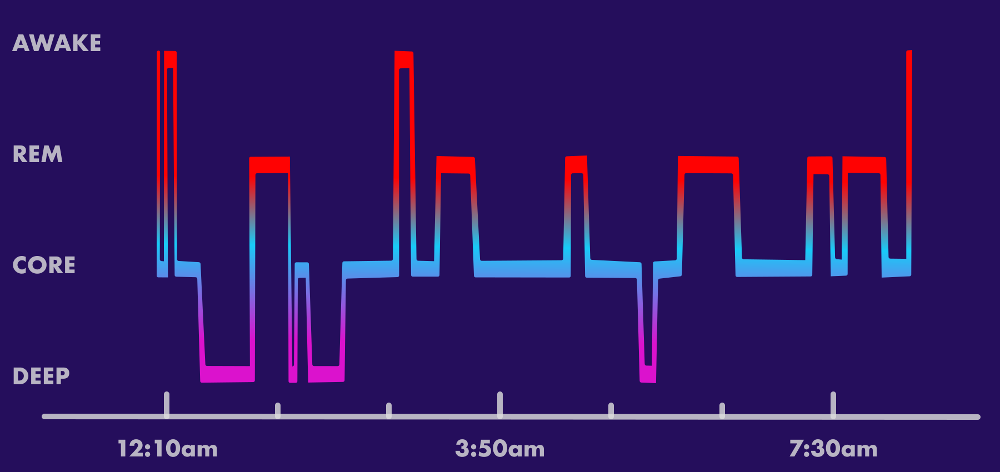

Sleep Stage Assessment
Overview
The objective of sleep stage assessment is to determine the different stages of sleep (N1, N2, N3, REM, and wake) over the course of a night. The de facto standard for sleep stage assessment is polysomnography (PSG) that requires collecting numerous multi-site physiological signals and a trained sleep technician to perform the assessment. The technician uses the physiological signals to determine the sleep stage based on the American Academy of Sleep Medicine (AASM) guidelines. The identification of stages is possible due to specific electrophysiological signatures present and recorded by EEG, EOG, and EMG signals.

The focus of this project is to develop a model that can perform sleep stage assessment using only a small subset of the signals that can be captured from same body location (e.g. wrist) that is viable for long-term use. In particular, the current models are trained on physiological signals that can be captured from the wrist for fitness band and smartwatch applications. Traditionally, wrist-based sleep classification has been performed using actigraphy, which is a method of monitoring gross motor activity using an accelerometer. However, actigraphy is not a reliable method for sleep stage assessment. The current model is designed to perform sleep stage assessment using a combination of motor activity, cardiovascular signals (e.g. heart rate), and derived resipiratory signals (e.g. respiration rate).

Sleep Stages
Sleep stages consists of wake (W), non-rapid eye movement (NREM) sleep, and rapid eye movement (REM) sleep. NREM sleep is further divided into three stages: N1, N2, and N3. N1 and N2 are considered light sleep, while N3 is considered deep sleep. REM sleep is considered the dreaming stage of sleep. During the course of a night, a subject will undergo multiple rounds of sleep cycles, each composed of the individual stages. The duration of each cycle and length of each stage various throughout the night. Each sleep cycle typically lasts around 90 to 120 minutes.
Characteristics
This is the time before or after bed when individual is awake.
Key Characteristics
- Alpha waves on the EEG
- No K-complexes or sleep spindles
- Eye movements are normal
- Respiratory rate and heart rate are normal
- Body movements are common
This is the shortest and lightest stage of sleep. It is the transition from wakefulness to sleep. It is characterized by slow eye movements, and alpha and theta waves on the EEG. It is also known as somnolence, or drowsy sleep. This stage lasts around 1 to 5 minutes, consisting of 5% of total sleep time. This stage is extremely difficult by EEG alone, and is often misclassified as wake or N2.
Key Characteristics:
- Alpha and theta waves on the EEG
- No K-complexes or sleep spindles
- Slow eye movements
- Respiratory rate and heart rate are normal
- Body temperature begins to drop
- Muscles relax; might jerk
This stage represents deeper sleep as the body begins to prepare for deep sleep. Physiologically, the body temperature begins to drop and the heart rate begins to slow. The stage is characterized by sleep spindles and K-complexes on the EEG. Stage 2 sleep lasts around 10 to 25 minutes, consisting of 45% to 55% of total sleep time. The duration increases as the night progresses.
Key Characteristics:
- Sleep spindles and K-complexes on the EEG
- No eye movements
- Respiratory rate and heart rate slows
- Body temperature drops
- Body movements are rare
Stage 3 sleep is the deepest stage of sleep. It is characterized by delta waves on the EEG. It is also known as slow-wave sleep (SWS) or delta sleep. It is difficult to wake someone from this stage. Stage 3 sleep lasts around 20 to 40 minutes, consisting of 3% to 8% of total sleep time. The duration decreases as the night progresses.
Key Characteristics:
- Delta waves on the EEG
- No eye movements
- Blood pressure drops, flow increases
- Respiratory rate and heart rate are at lowest levels
- Body movements are rare (sleep walking, sleep talking, bed wetting, and night terrors may occur)
The REM stage is characterized by rapid eye movements, low muscle tone, and dreaming. It is also known as paradoxical sleep. It is difficult to wake someone from this stage. REM sleep lasts around 10 to 60 minutes, consisting of 20% to 25% of total sleep time. The duration increases as the night progresses.
- Brain activity mimicks normal awake
- Rapid eye movements
- Respiration increases and irregular
- Heart rate increases
- Temperature regulation is off
- Body becomes immobile
Limitations
Inferring sleep stage without electrophysiological signals is an extremely challenging task. Especially when considering a highly noisy ambulatory environment. Furthermore, the limited time spent in certain sleep stages such as N1 makes it difficult to accurately classify these stages. This is highlighted by the limited interrater reliability of sleep stage scoring. A recent paper by Kapur et al., 2021 performed a meta-analysis of 101 studies and found that the interrater reliability for stage N1 sleep was only fair, while the interrater reliabilities for stage N2 and N3 sleep were moderate. The paper found the Cohen’s kappa for manual, overall sleep scoring was 0.76, indicating substantial agreement (95% confidence interval, 0.71–0.81; P < .001). By sleep stage, the figures were 0.70, 0.24, 0.57, 0.57, and 0.69 for the W, N1, N2, N3, and R stages, respectively. The interrater reliabilities for stage N2 and N3 sleep were moderate, and that for stage N1 sleep was only fair. Taking this into account, we should not expect to achieve perfect sleep stage classification.